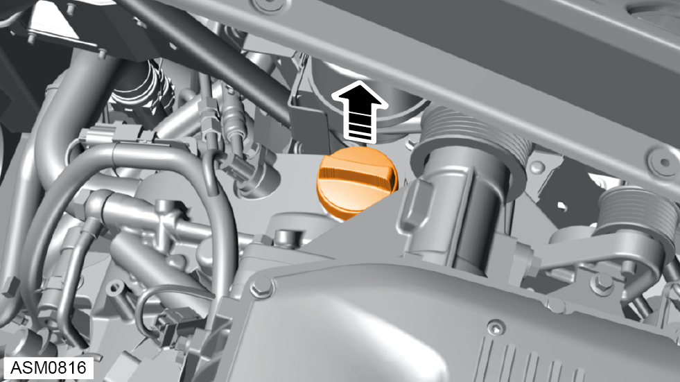
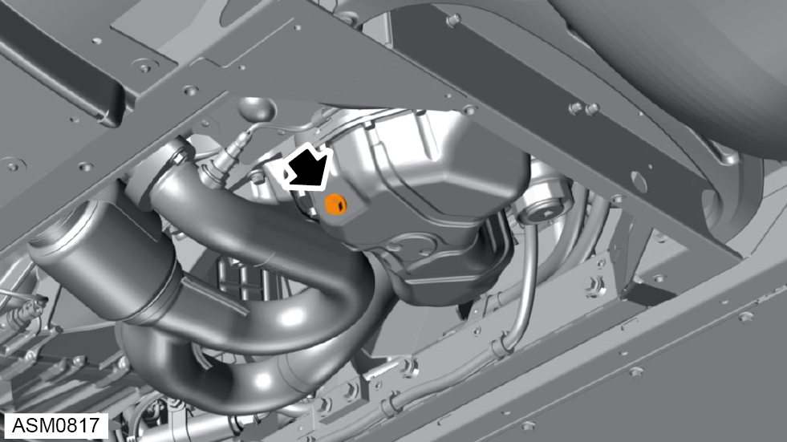

Removal


 WARNING: Engine oil is a toxic substance and can be lethal if ingested.
WARNING: Engine oil is a toxic substance and can be lethal if ingested.
NOTE: Drain oil into a suitable container and dispose of appropriately.
WARNING: Engine oil is a toxic substance and can be lethal if ingested.
NOTE: Drain oil into a suitable container and dispose of appropriately.
NOTE: Service fill volume 5 litres.
NOTE: Dry fill volume 6 litres.
NOTE: Oil level should be between the two dots on lower end of dipstick.
NOTE: The difference between high and low dipstick marks is equivalent to approximately 1.5 litres of oil.